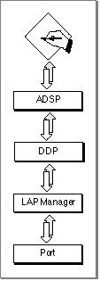
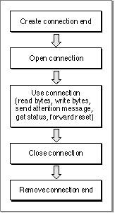

About ADSP
ADSP includes both session and transport services, and it is the most commonly used of the AppleTalk transport protocols. The .DSP driver implements ADSP. ADSP allows you to establish and maintain a connection between two AppleTalk network entities and transfer data across this connection as a continuous stream. Because ADSP is a client
of DDP, data that you transmit using ADSP is actually sent and received over the AppleTalk internet in packets. However, ADSP builds a session connection on top of
the packet transfer services that DDP provides so that applications using ADSP can exchange data as a continuous stream. Figure 5-1 on page 5-4 shows ADSP and the underlying protocols that it uses; ADSP is a client of DDP, just as your application is a client of ADSP.Figure 5-1 ADSP and its underlying protocols

Communication between two applications using ADSP occurs over a connection that is made between the two sockets that these network entities use; ADSP assigns a socket to be used when you initialize each end of the connection, and your application becomes
a client of that socket. Because this connection exists for the duration of the exchange, ADSP is called a connection-oriented protocol. ADSP manages and controls the data flow between the two sockets throughout the session to ensure thatIn an ADSP session, both ends of the connection have equal control over the communica-
- the data is delivered and received in the order in which it was sent
- duplicate data is not sent
- the application or process at the receiving end of the connection has the buffer capacity to accept the data
tion in a peer-to-peer relationship. For the two ends of an ADSP connection to function properly, each must maintain information to control the connection and determine the connection state. To accommodate these requirements, the socket at either end of the connection has associated with it information that defines the state of the connection
and information that the application and ADSP use to control the connection and communicate over it. The combination of a socket and the ADSP information maintained by the socket client is referred to as a connection end. To create a connection, two connection ends must be set up and initialized. Each connection end views itself as the local end and the other as the remote end.Your application can use ADSP to
Figure 5-2 shows the order in which applications commonly call the ADSP routines to perform these functions for a connection end. (Figure 5-4 on page 5-8 shows this for a connection listener.)
- create a connection end
- request a connection with a remote connection end
- create a connection listener to wait passively for connection requests from remote connection ends (see "Connection Listeners" on page 5-7 for more information)
- read data from and write it to an open connection
- close a connection without removing it
- remove a connection end
Figure 5-2 Steps for creating an ADSP connection end

ADSP provides for a full-duplex data stream between the two ends of the connection that allows for a full-duplex dialog; this means that either end of the connection can
call routines to send data at any time. (However, full-duplex does not mean that both connection ends actually send electrical signals at the same time; ADSP controls this process.) See the chapter "Introduction to AppleTalk" in this book for more information on full-duplex communication.In addition to the full-duplex data stream that an ADSP session maintains, ADSP allows either end of a connection to send an attention message to the other end without interrupting the primary flow of data.
Among the features that ADSP provides are
- an end-of-message feature that lets you break streams of data into logical messages
- an attention-message feature that lets you and your partner application signal to each other outside the normal exchange of data
- a forward-reset feature that lets you cancel the delivery of any data that is in your connection end's send queue and any data that you have sent that is in transit and that the remote connection end has not received
- a built-in flow control feature that ensures that your application sends data only if its remote partner has the buffer capacity to receive it
Subtopics
- Connections, Connection Ends, and Connection States
- Connection Listeners
- Reliable Delivery of Data
- Unsolicited ADSP Events